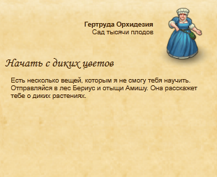

  Взятие задания
Взятие задания
| Получения | Гертруда Орхидезия, Сад тысячи плодов |
|---|---|
| Для выполнения нужно | Профессия |
| Место выполнения | Лес Бериус |
Процесс прохождения
Гертруда Орхидезия просит отправится в Лес Бериус ( - 1) и встретится с Амишей, которая расскажит о диких растениях.
- 1) и встретится с Амишей, которая расскажит о диких растениях.